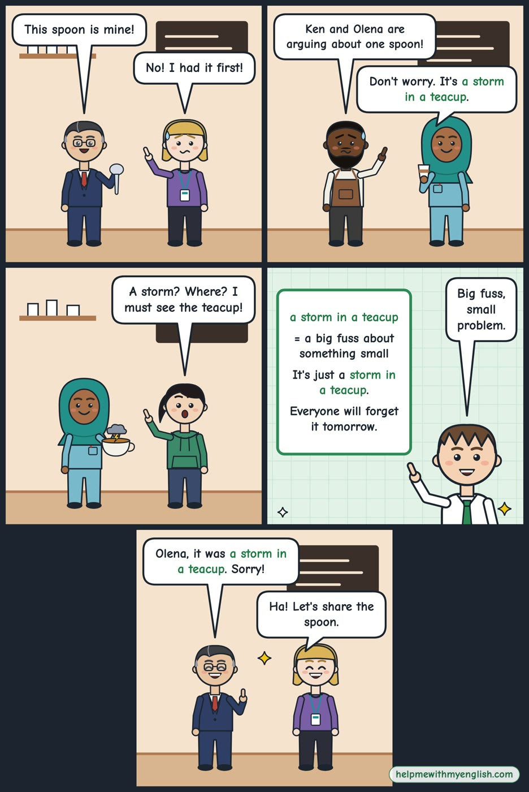

a storm in a teacup
A big fuss about something that is not really important.
It's just a storm in a teacup. Everyone will forget it by tomorrow.
Tip: Say 'It's a storm in a teacup' or 'make a storm in a teacup out of something' to describe a fuss that is bigger than the problem; British in origin, but widely understood in American English too.
Hear it in conversation
Workbook
1. What does it mean?
In this conversation, what does 'a storm in a teacup' mean?
2. Fill the gap
My neighbour complained about my bin being two centimetres over the line, but it was all a and we laughed about it later.
3. Choose the best reply
Olena: Everyone is panicking because the printer was down for ten minutes this morning.
4. Your turn: speak
Tell me about a time when people made a big fuss about something small. What happened?
Show an example answer
Last month, my flatmates argued for a whole evening about whose turn it was to take out the rubbish. Honestly, it was a storm in a teacup, because it took two minutes to do. In the end Diego just did it, and everyone felt a bit silly.
Answer key: a storm in a teacup
- 1. D. A big reaction to something that doesn't really matter
- 2. storm in a teacup
- 3. C. Ten minutes? That's a storm in a teacup. It's working again now.
- 4. Example: Last month, my flatmates argued for a whole evening about whose turn it was to take out the rubbish. Honestly, it was a storm in a teacup, because it took two minutes to do. In the end Diego just did it, and everyone felt a bit silly.
See it in a comic
